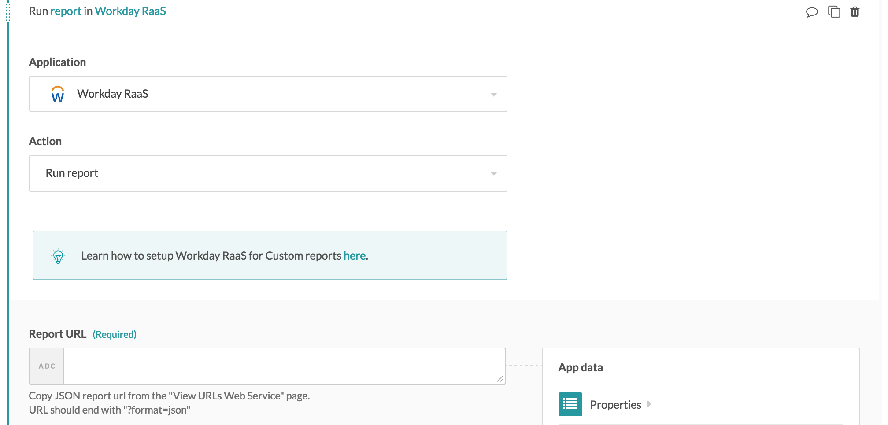
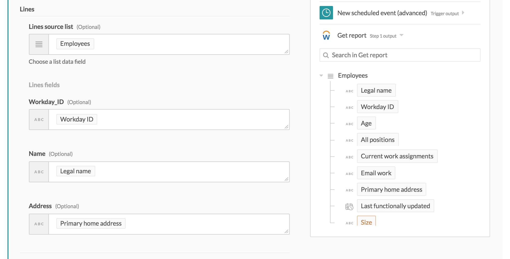
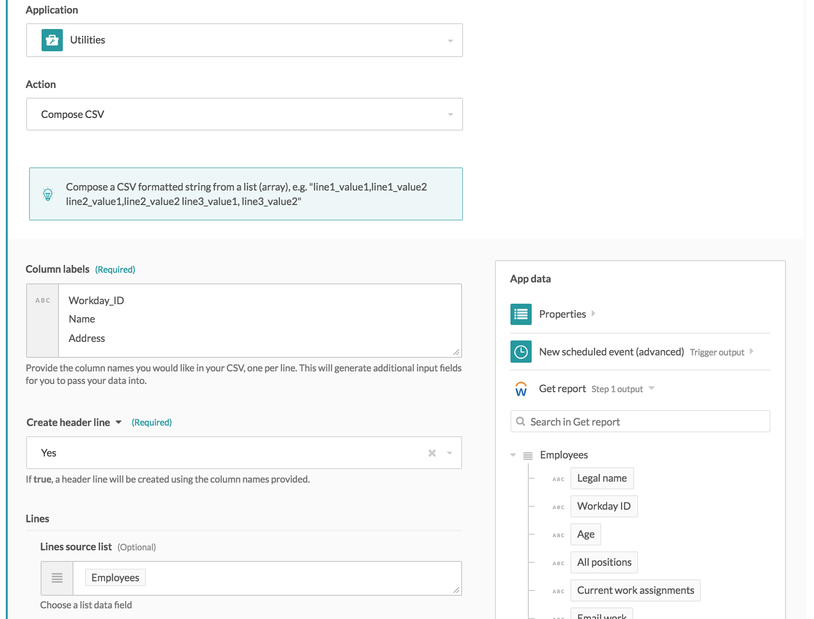
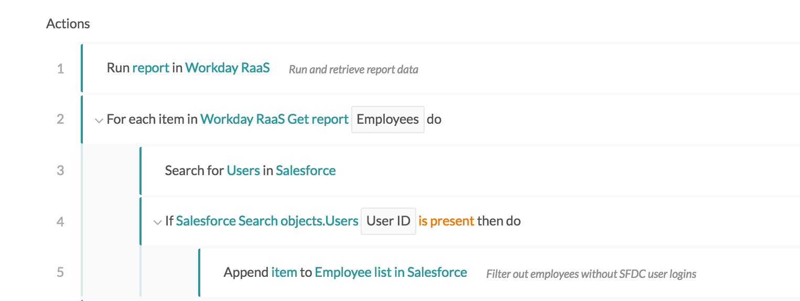
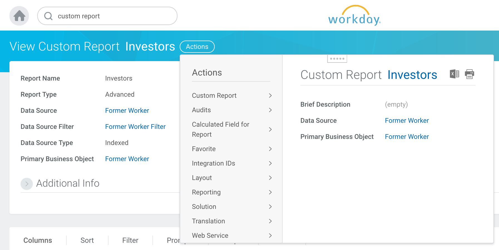
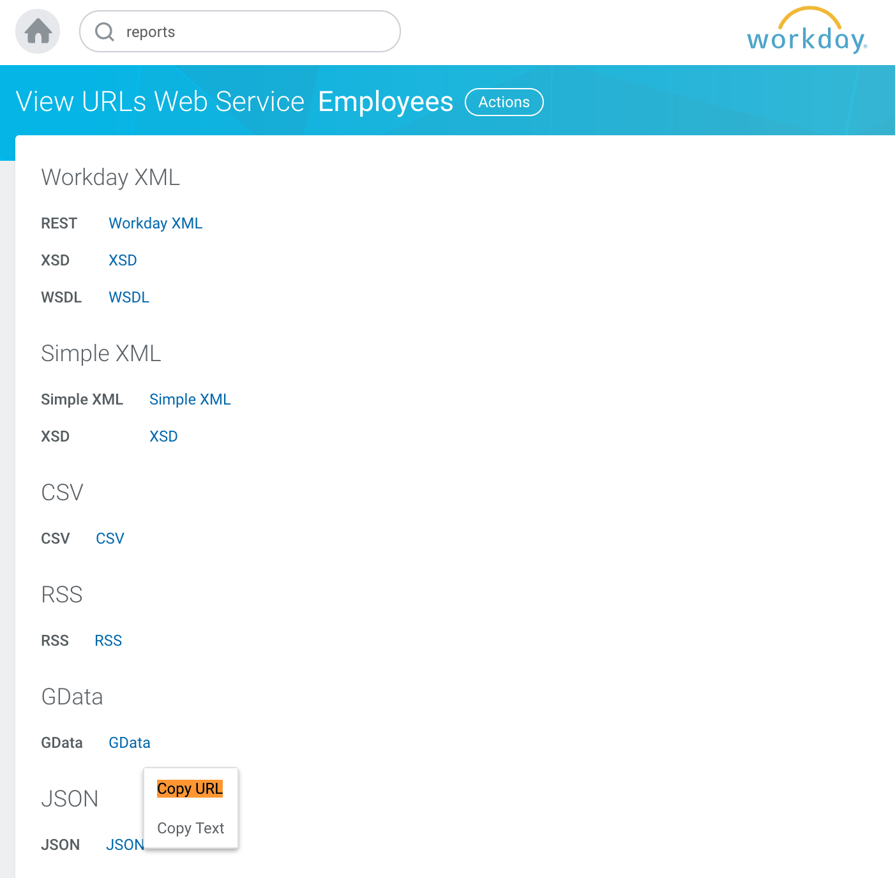
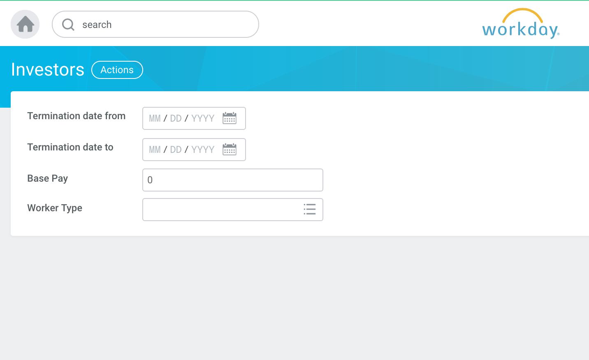
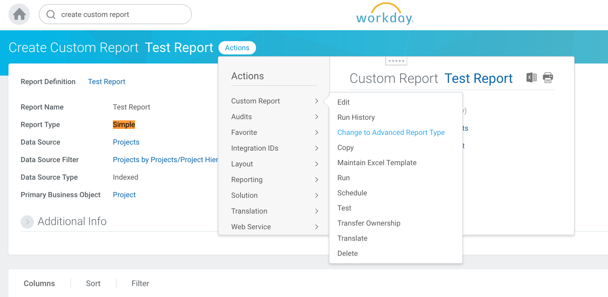
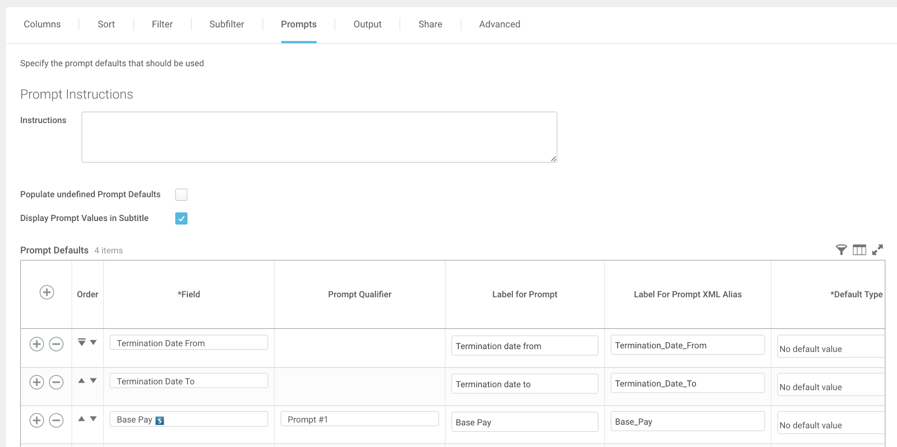
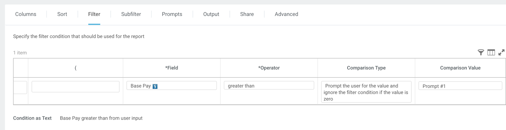

Workday Report-as-a-Service
How to use
Workday Report-as-a-Service is exposed as an action in Workato. This action will execute a run of the report and retrieve all data from that report as return them as an array. This data can be used in a recipe like any other actions.
Inputs
The only input required is the RaaS JSON URL. Find out how to get this URL in the Custom Reports section of this documentation. When this URL is provided, the Workday action will generate the appropriate output fields.
 Run report input
Outputs
The output of this action is presented as an array. Each element in this array corresponds to a row in the report. Similarly, each column in your report will be rendered as a field in the report output array.
 Run report output
Use cases
Generate a custom CSV file
A very simple use case for running and retrieving custom report data from Workday is to create a CSV file from the report. This can be done using the Compose CSV action under the Utilities application.
 Create CSV file from Workday custom report data
Filter rows using custom logic
Workday provides a comprehensive feature to add filters and validation logic to report results. However, it is limited to data available in Workday. Workato allows you to extract report data out of Workday, and execute validation logic against data from multiple sources.
 Custom filter logic using data from external applications
This example shows how to filter out rows in a report against data from Salesforce but checking for presence of a corresponding Salesforce User account. The resulting report will contain only employees from Workday that are active Salesforce Users.
Custom Reports Setup
Custom Reports (advanced type) can be exposed as a Web Service to be used programmatically. Workato uses this web service to automate report run and to integrate report data from Workday to other applications.
How to find JSON endpoint
Find URL in Actions > Web Service > View URLs
 View Report URLs
Right click JSON and choose "Copy URL"
 Copy RaaS JSON URL
Filter parameters
Prompts behave like request parameters. In the UI, it is presented as input fields before generating actual report. As a REST endpoint, these prompts are passed as request parameters.
Report User Interface
 Raas prompts
Basic Setup
Report type
Switch to advanced type if not already. Only Advanced custom reports can be used in RaaS.
 Use advanced report
Add prompts
Add all default prompts that are required of web-service-enabled reports. Add additional prompts as desired.
 Add RaaS prompts
In this example, Base Pay is assigned to Prompt Qualifier as Prompt #1, which will be used in filters.
Add filters
Apply logic to filter prompt values Use values from Prompt to compare against report column values. Example, assign Prompt parameter Base Pay as Prompt #1
 Add RaaS filters
When generating a report, Base Pay parameter will be checked. If a value if provided, only records with Base Pay greater than the provided value will be included in the report.